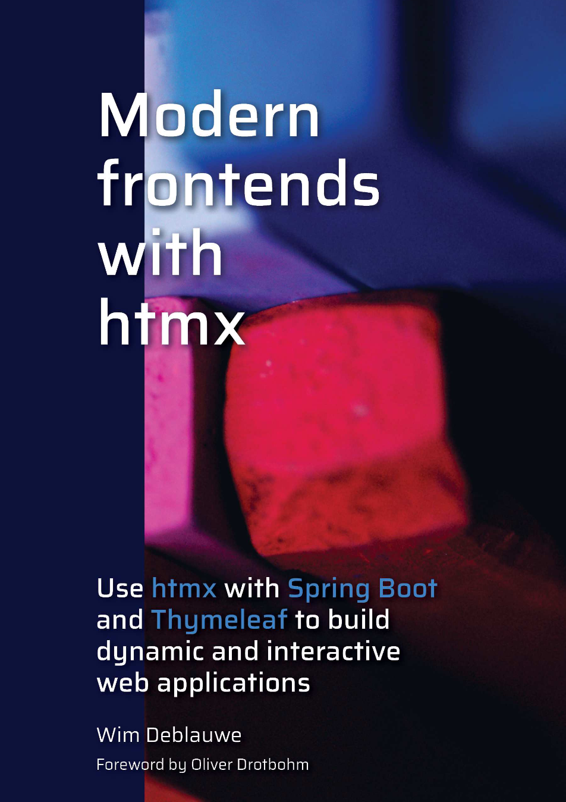

<button
hx-post="/clicked"
hx-trigger="click"
hx-target="#parent-div"
hx-swap="outerHTML">
Click Me!
</button>Bring back the joy in web development with HTMX and Hypermedia
#springio25
#htmx #hypermedia
@atomfrede@mastodon.social

About Me
ü뮂Äçüë©‚Äçüëß‚Äçüë¶ üèä‚Äç‚ôÇÔ∏è üö¥ üèÉ
Software Architect @adesso SE
JUG Paderborn Co-Organizer
JHipster Board Member
Agenda
Modern Frontend Development
Hypermedia
HTMX, JTE
HTMX Patterns
Conclusion
Modern Frontend Development
SPAs are often use "by default"
API Churn
Lot of tools, frameworks involved
Teamsplit
üò± üòÆ‚Äçüí®
Does it spark joy?
[…]accepting the complexity of SPAs by default even when business needs don’t justify it. We still see some developers who aren’t aware of an alternative approach because they’ve spent their entire career in a framework like React. We believe that many websites will benefit from the simplicity of server-side logic[…]
— Thoughworks Tech Radar
Does it spark joy?
SPAs are often not needed, but increased the complexity by huge factor
There will be a point when static html is not enough anymore
When is this point reached? Can it be pushed further?
What is hypermedia?
What is hypermedia?
Hypertexts: New forms of writing, appearing on computer screens, that will branch or perform at the reader’s command. A hypertext is a non-sequential piece of writing; only the computer display makes it practical.
— Ted Nelson
History lesson
Ted Nelson coined the term [1] in 1963 [2]
Non-linear branching model
Project Xanadu [3]
Can be traced back to the 40ties and the idea of the memex [4]
Fast Forward…
1990 Tim Berners-Lee published the first website
HTML - Hypertext Markup Language
Hyperlinks between documents
Forms where not part of the initial HTML (readonly)
Anchors and forms have been enough to make the web grow rapidly
Hypermedia driven applications
A web application that uses hypermedia and hypermedia exchanges as its primary mechanism for communicating with a server.
HTML stopped to evolve as hypermedia/hypertext
Why should only
<a>and<form>be able to make HTTP requests?Why should only
clickandsubmitevents trigger a request?Why should only
GETandPOSTbe allowed?Why should only the entire screen be replaced?
HTMX
By removing these constraints, htmx completes HTML as a hypertext
— HTMX
small js-library (~14k)
simplifies AJAX, WebSockets, Server Send Events
access all the features declaratively via HTML attributes
server answers with (partial) HTML
HTMX Attributes
Small set of essential attributes
hx-get|post|put|deletehx-targethx-triggerhx-swap
HTMX
JTE
There are a lot of template engines for java/the jvm
Most of them are very mature
But nearly none of them is typesafe
Many use reflection
does it spark joy?
JTE
@import org.example.Page
@param Page page
<head>
@if(page.getDescription() != null)
<meta name="description" content="${page.getDescription()}">
@endif
<title>${page.getTitle()}</title>
</head>
<body>
<h1>${page.getTitle()}</h1>
<p>Welcome to my example page!</p>
</body>HOWL - Hypermedia on whatever you like
Thymeleaf - the classic
JStachio - typesafe, extremely fast mustache
HTMLFLow - DSL approach (better use kotlin)
kotlinx.html - Pure kotlin
Qute - the quarkus one
Spring ViewComponents
Client-side state/scripting?
Plain/VanillaJS
alpine.js
stimulus (hotwired)
HTMX patterns
Form validation
Form validation
<form action="/" method="post" id="hx-form">
<fieldset>
<label>Firstname
<input
type="text"
hx-trigger="keyup changed delay:250ms"
hx-post="/"
hx-include="closest form"
hx-target="#hx-form"
hx-swap="morph">
</label>
<fieldset>
<button type="submit" value="Submit">Submit</button>
</form>Form validation
@HxRequest
@PostMapping("")
public String htmxPost(@Valid FormModel formModel, BindingResult bindingResult, Model model){
model.addAttribute("formModel", formModel);
model.addAttribute("validationResult", bindingResult);
return "form";
}
@PostMapping("")
public String postIndex(@Valid FormModel formModel, BindingResult bindingResult, Model model){
// usual form handling with redirect
}Form validation
Pagination, Sorting
Pagination, Sorting
<table hx-target="#table-wrapper" hx-push-url="true" class="striped">
<thead><tr><th scope="col">
@if (persons.getSort().getOrderFor("name") != null && persons.getSort().getOrderFor("name").isDescending())
<div hx-get="/tables?sort=name,asc&size=${persons.getPageable().getPageSize()}&page=${persons.getPageable().getPageNumber()}">
Name (V)
</div>@endif</th><tr></thead>
</table>
<div role="group" hx-target="#table-wrapper" hx-push-url="true">
<!-- omitted for brevity -->
@if (persons.hasPrevious())
<button
hx-get="/tables?size=?page=${persons.getPageable().getPageNumber()-1}&${persons.getPageable().getPageSize()}&sort=${persons.getPageable().getSort().toString().replace(": ", ",").trim().toLowerCase(Locale.ROOT)}"
>Prev
</button>
@else
<button disabled>Prev</button>
@endif
</div>Pagination, Sorting
@GetMapping
public String index(Model model, Pageable pageable) {
Page<Person> page = personService.findAll(pageable);
model.addAttribute("persons", page);
model.addAttribute("pager", PagerModel.fromPage(page));
return "table/index";
}
@GetMapping
@HxRequest
public String table(Model model, Pageable pageable) {
Page<Person> page = personService.findAll(pageable);
model.addAttribute("persons", page);
model.addAttribute("pager", PagerModel.fromPage(page));
return "table/table";
}Endless scrolling
@for(var personEntry : ForSupport.of(persons.getContent()))
@if (personEntry.isLast())
<blockquote
hx-get="/endless-scrolling?page=${persons.getNumber() + 1}&size=${persons.getSize()}&sort=name,desc"
hx-trigger="intersect once"
hx-swap="afterend"
>${personEntry.get().getQuote()}</blockquote>
@else
<blockquote>${personEntry.get().getQuote()}</blockquote>
@endif
@endforRealtime updates
<ul hx-ext="ws" ws-connect="/websockets/ws" id="news-feed"></ul>@Scheduled(fixedRate = 5000)
public void updateNewsFeed(){
TemplateOutput output = new StringOutput();
templateEngine.render("feedItem.jte", Map.of("feedItem", randomFeedItem()), output);
websocketHolder.broadcastHtmlSnipped(output.toString());
}Realtime updates
<ul hx-ext="ws" ws-connect="/websockets/ws" id="news-feed"></ul>@param com.github.atomfrede.spring_io_25_samples.RealtimeService.FeedItem feedItem
<li id="news-feed" hx-swap-oob="afterbegin">
<article>
<header>${feedItem.author}</header>
${feedItem.message}
<footer>${feedItem.timestamp.toString()}</footer>
</article>
</li>Modal dialogs
Modal dialogs
need to create the content on demand
e.g. confirmation dialog for a delete action
leverage htmx to get the content easily
use alpine to handle interaction with the modal
server answers with the modal content/dialog
Modal dialogs
<button
hx-get="/modal-dialogs"
hx-target="#modals-here"
hx-trigger="click"
class="btn primary">Open Modal</button>Modal dialogs
There is more
client side event triggers
transitions and animations
server send events
progressive enhancement
all declarative
Conclusion
Does it spark joy?
removed a lot of complexity
pushed the barrier for SPAs further
ability to move faster (no contracts)
invest in long living, framework agnostic tech(niques)
team(s) are not split
When to use it?
Form based applications (aka "enterprise" applications)
CRUD
e-commerce
Nested UI elements, controlled updates
Must use hypermedia exchanges as primary communication
And when not to use it?
Offline requirement
Many dynamic, interdependent UI elements
Updated very frequently (e.g. Miro)
Be aware of certain security implications
CSP, hx-on/trigger, XSS, HTML injection
Combine these approaches ("dynamic islands")
Must Read


Links
Example Code
Thanks
Questions?
Slides ➡️